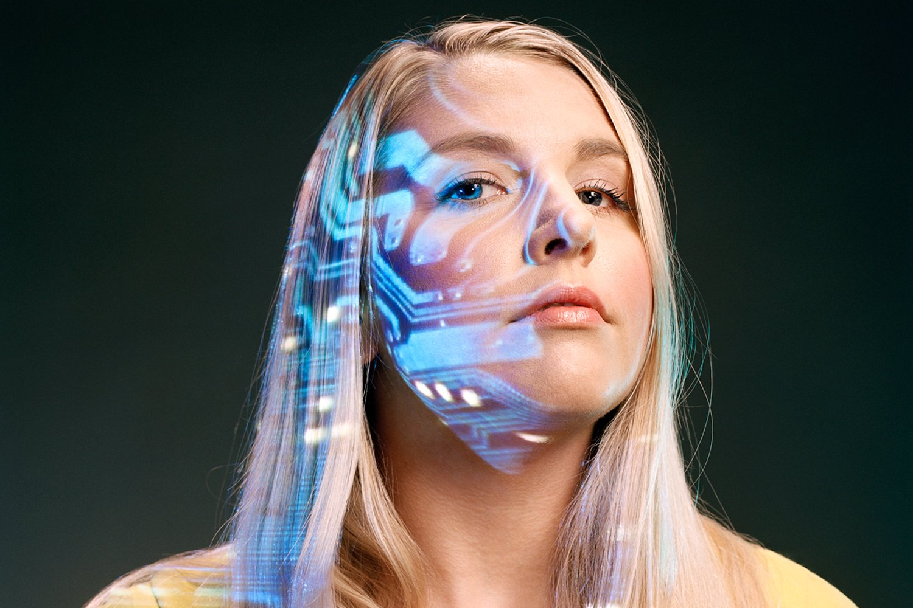

Дизайнер виртуальной реальности
Эксперты прогнозируют существенный рост рынка VR-устройств. В ближайшие 7-8 лет он должен превысить отметку в 45 миллиардов долларов. Миллионы людей будут проводить большую часть свободного времени в виртуальной реальности, которую и будут проектировать дизайнеры нового поколения. Они будут создавать виртуальные офисы для дистанционных переговоров, музеи, муниципальные учреждения и многое другое.

Разработчики робоэтики
Или адвокаты по робоэтике. Они будут выступать посредниками между человеком и искусственным интеллектом. В задачи специалистов будет входить разработка этических норм, в соответствии с которыми роботы смогут существовать среди живых людей. Потребность в профессии обусловлена возможным появлением «плохих» машин, способных намеренно причинить вред людям.

Виртуальные экскурсоводы и digital-комментаторы
Вы испытываете катарсис, когда соприкасаетесь с произведениями искусства в музеях, в картинных галереях? Эксперты полагают, что совсем скоро виртуальные экскурсии вытеснят до 80% реальных помещений культурных объектов. Здесь то и пригодятся digital-комментаторы и экскурсоводы, владеющие VR-технологиями.

Биохакеры
По сути это любители, которые проводят собственные исследования в области молекулярной биологии, используя открытые данные научного сообщества. Предполагается, что в скором времени биохакеры выйдут на новый уровень и в режиме фриланса смогут помогать ученым в поиске способов лечения сложнейших заболеваний.

-
Космический гид -
Ученые говорят о том, что к началу 2030-х годов космический туризм перестанет быть редкостью и станет вполне доступным для обеспеченных людей. В связи с этим станут востребованными гиды, которые будут сопровождать путешественников в полетах к звездам. И если на начальном этапе ими могут стать космонавты, то в дальнейшем специальность может появиться даже в рядовых ВУЗах. 
-
Куратор персональных данных -
Нейроинтерфейсы, объединяющие человеческий мозг с компьютером станут максимально распространенными уже через 3-4 года. Мы сможем «записывать» воспоминания, планы и мысли, а также распространять их в социальных сетях – делиться с друзьями и даже незнакомыми пользователями. Задача куратора персональных данных – объединить сведения в общий информационный поток и адаптировать их. 
-
Специалист по восстановлению экосистем -
Примерно к 2030-му году ресурсы планеты могут серьезно истощиться в связи с существенным ростом населения. Речь идет не только о невосполняемой нефти, но и о животных, растениях. В этой ситуации потребуются инженеры, которые займутся восстановлением окружающей среды. В частности, они смогут «возродить» вымершие виды животных и растений, используя ранее собранный генетический материал. 
-
Инженер по разработке устройств постоянного питания -
В ближайшие 5-10 лет может быть завершен переход к устойчивой энергетике – на всей территории планеты начнут использовать энергию солнца и ветра в качестве основного источника питания. Единственная проблема – невозможность эксплуатации приборов в облачную и безветренную погоду. Потому разработчики устройств постоянного питания станут особенно востребованными. 

Космический гид
Ученые говорят о том, что к началу 2030-х годов космический туризм перестанет быть редкостью и станет вполне доступным для обеспеченных людей. В связи с этим станут востребованными гиды, которые будут сопровождать путешественников в полетах к звездам. И если на начальном этапе ими могут стать космонавты, то в дальнейшем специальность может появиться даже в рядовых ВУЗах.
Куратор персональных данных
Нейроинтерфейсы, объединяющие человеческий мозг с компьютером станут максимально распространенными уже через 3-4 года. Мы сможем «записывать» воспоминания, планы и мысли, а также распространять их в социальных сетях – делиться с друзьями и даже незнакомыми пользователями. Задача куратора персональных данных – объединить сведения в общий информационный поток и адаптировать их.
Специалист по восстановлению экосистем
Примерно к 2030-му году ресурсы планеты могут серьезно истощиться в связи с существенным ростом населения. Речь идет не только о невосполняемой нефти, но и о животных, растениях. В этой ситуации потребуются инженеры, которые займутся восстановлением окружающей среды. В частности, они смогут «возродить» вымершие виды животных и растений, используя ранее собранный генетический материал.
Инженер по разработке устройств постоянного питания
В ближайшие 5-10 лет может быть завершен переход к устойчивой энергетике – на всей территории планеты начнут использовать энергию солнца и ветра в качестве основного источника питания. Единственная проблема – невозможность эксплуатации приборов в облачную и безветренную погоду. Потому разработчики устройств постоянного питания станут особенно востребованными.